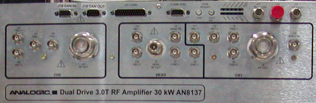
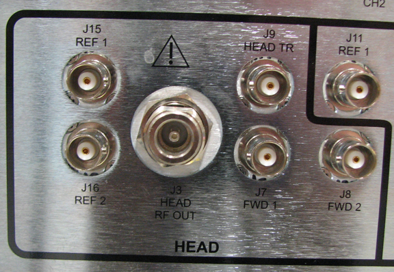
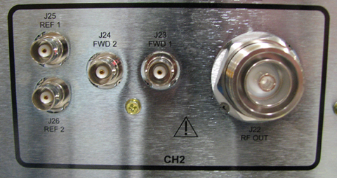
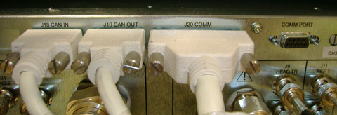
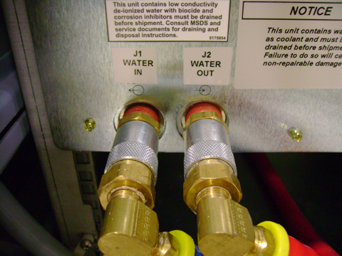
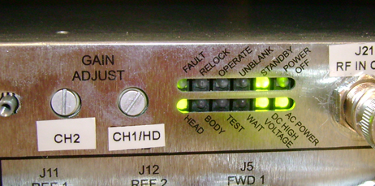
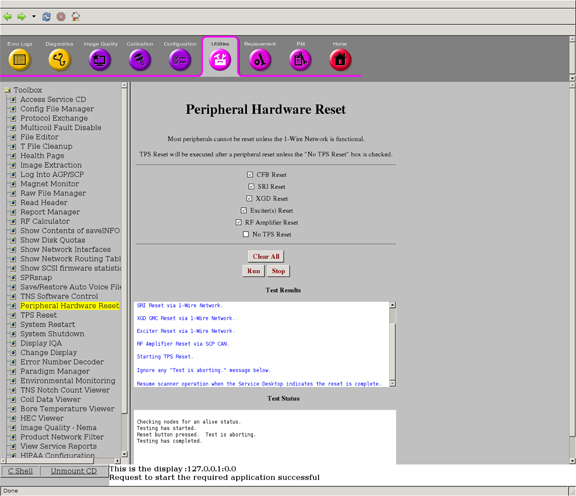

Proprietary to General Electric Company
Direction 5670006, Rev# 1
Discovery MR750w GEM Service Methods
Module Version 2.0, Version Date 10/14/11
Proprietary to General Electric Company |
The solid-state, water-cooled Dual Drive RF amplifier accepts two independent RF inputs from independent Digital Exciter (DTX) units in order to produce the dual-drive body and single-drive head RF outputs. The channel 1 DTX signal input at RF amplifier J14 provides RF drive for the body channel 1 RF output when the amplifier is in body mode and head RF output when the amplifier is in head mode. The channel 2 DTX signal input at RF amplifier J21 provides RF drive for the body channel 2 RF output when the amplifier is in body mode. A single unblank signal input at RF amplifier J20 is used to control the dual body output ports. Each body output channel port is capable of 20 kW peak envelope power @ 127.72 MHz while the head port is capable of 5kW peak envelope power @ 127.72 MHz.
The amplifier has two discrete step rotary encoders used for RF gain adjustment. One encoder is shared between Body Channel 1 and the Head gain adjustment depending the whether the amplifier is in head or body mode. The other is used for Body Channel 2 gain adjustment only.
The Driver Module provides a single body TR bias signal to the RF amplifier. The amplifier couples this single bias signal onto the channel 1 & 2 body transmit outputs. Therefore, both body channel 1 & 2 transmit cables carry both RF plus DC. The new driver configuration file sets the limit in body mode so that the system will detect an open circuit on either dual-channel body output. A single head TR bias signal is provided by the Driver Module for the head transmit circuit. This head circuit design is the same as with previous products equipped with single-drive RF technology.
One difference between the MR750w system, which employs dual-drive RF technology for body transmit, and previous systems is that the dual-drive system does not contain a body hybrid splitter and external dummy load. This difference means that, during scanning, higher levels of reflected power are normally present on the body channel 1 & 2 transmission lines. This reflected power must be isolated from the internal RF amplifier channel 1 and 2 drivers in order for the amplifier to deliver the power for which it was calibrated. New hardware was required to isolate and dissipate this reflected power. RF circulators were added inside the RF amplifier to route the reflected power away from the internal RF channel 1 & 2 drivers. RF dummy loads were added inside the RF amplifier to absorb and dissipate the reflected RF power as heat. The head transmission circuit does not utilize dual-drive RF technology and so does not require this hardware.
The RF amplifier communication interface is based on the CAN open protocol to provide enhanced transfer of information to the system. The CAN link provides communication to/from the amplifier from the Scan Control Processor (SCP). The Amplifier I/F Board (AIF) provides UNBLANK control, emergency shutdown and a rudimentary secondary control link to the Dual Drive RF amplifier.
Diagnostic RF, voltage and temperature sensors are located within various sections of the RF amplifier. Tools such as RF Amp Power Check Tool gather data from these sensors during scanning. This data can then be used to help assess the condition of the head and body transmit circuit as well as the general health of the RF amplifier. The RF amplifier is designed to be a single replaceable FRU. Unlike the single-drive, 35kW 3.0T XRFD this unit does not contain any replaceable internal FRUs.
For information about the design and function of Dual Drive technology, see Dual Drive Theory.
For replacement information about the Dual Drive RF Amplifier, see Dual Drive RF Amp Replacement.
The Dual Drive RF amplifier has three banks of connectors: Channel 1 (CH1), Head, and Channel 2 (CH2). (See Illustration 1.) There are also two coolant connectors.
Illustration 1: Connectors for Dual Drive 3.0T RF Amplifier

Table 1 lists the connectors for Channel 1 on the Dual Drive RF amplifier.
Illustration 2: Connectors for Channel 1 (CH1)

Table 1: Connectors for Dual Drive RF Amplifier Channel 1 (CH1)
| Designator | Chassis Label | Description | Connector Type | Signal Type |
| J11 | BODY REF 1 | Body Reflected RF power sample | BNC Female | Low Level RF |
| J12 | BODY REF 2 | Body Reflected RF power sample | BNC Female | Low Level RF |
| J5 | BODY FWD 1 | Body Forward RF power sample | BNC Female | Low Level RF |
| J6 | BODY FWD 2 | Body Forward RF power sample | BNC Female | Low Level RF |
| J4 | BODY FWD OUT | Body RF Power Out | 7/16 DIN Female | High Power RF with TR Bias |
| J10 | BODY TR | Body TR Bias Input | BNC Female | Switching DC Control |
Table 2 lists the connectors for Head on the Dual Drive RF amplifier.
Illustration 3: Connectors for Head

Table 2: Connectors for Dual Drive RF Amplifier Head
| Designator | Chassis Label | Description | Connector Type | Signal Type |
| J15 | HEAD REF 1 | Head Reflected RF power sample | BNC Female | Low Level RF |
| J16 | HEAD REF 2 | Head Reflected RF power sample | BNC Female | Low Level RF |
| J3 | HEAD RF OUT | Head RF Power Out | N Female | High Power RF with TR Bias |
| J9 | HEAD TR | Head TR Bias Input | BNC Female | Switching DC control |
| J7 | HEAD FWD 1 | Head Forward RF power sample | BNC Female | Low level RF |
| J8 | HEAD FWD 2 | Head Forward RF power sample | BNC Female | Low level RF |
Table 3 lists the connectors for Channel 2 on the Dual Drive RF amplifier.
Illustration 4: Connectors for Channel 2 (CH2

Table 3: Connectors for Dual Drive RF Amplifier Channel 2 (CH2)
| Designator | Chassis Label | Description | Connector Type | Signal Type |
| J25 | BODY REF 1 | Body Reflected RF power sample | BNC Female | Low Level RF |
| J26 | BODY REF 2 | Body Reflected RF power sample | BNC Female | Low Level RF |
| J24 | BODY FWD 1 | Body Forward RF power sample | BNC Female | Low Level RF |
| J23 | BODY FWD 2 | Body Forward RF power sample | BNC Female | Low Level RF |
| J22 | BODY FWD OUT | Body RF Power Out | 7/16 DIN Female | High Power RF with shared Body TR Bias provided from J10 |
Illustration 5 shows J21, J13, and J14. Table 4 lists the connector and their signal types.
Illustration 5: J21, J13, and J14 Connectors

Table 4: Other Connectors
| Designator | Chassis Label | Description | Connector Type | Signal Type |
| J13 | HSS/TEST | RF (HSS) Test Port Output | BNC Female | Low level RF (400 mW ∓10%) (26 ∓ 0.4 dBm) |
| J14 | RF IN CH1 | RF Input for CH1 (Body) and Head | BNC Female | Low level RF (-4 to 4 dBm) |
| J21 | RF IN CH2 | RF Input for CH2 | BNC Female | Low level RF (-4 to 4 dBm) |
The CAN link provides communication to/from the Dual Drive RF Amplifier from the Scan Control Processor (SCP). Illustration 6 shows the communication connectors. Table 5 lists the connectors and their signal types.
Illustration 6: Communication Connectors

Table 5: Communication Connectors
| Designator | Chassis Label | Description | Connector Type | Signal Type |
| J18 | CAN IN | CAN Communication (input) | 9-PIN sub-D, female | Logic and 24V |
| J19 | CAN OUT | CAN Communication (output) | 9-PIN sub-D, male | Logic and 24V |
| J20 | COMM | General Communication (Input) | 25-PIN sub-D, male | RS422 |
| COMM | COMM PORT | Unused | 9-PIN sub-D, female | Unused |
The Dual Drive RF Amplifier utilizes water cooling for better thermal management and to reduce acoustic levels. The two coolant connectors are on the lower left of the Dual Drive RF Amplifier: one is input and one is output.
Illustration 7: Coolant Connectors

Table 6: Coolant Connector Labels
| Chassis Designator | Chassis Label |
| J1 | WATER IN |
| J2 | WATER OUT |
The AC Line Power Input Connector is a terminal block supporting 3-phase power provided by the Power Distribution Unit (PDU). These power connectors are located on the lower portion of the Dual Drive RF Amplifier. There are three incoming lines (L1, L2, and L3) and a ground connector. (See Illustration 8.)
Illustration 8: Power Connector

The Dual Drive RF Amplifier is protected by a circuit breaker.
Illustration 9: Circuit Breaker

The Dual Drive 3.0T RF Amplifier has two gain adjustment digital encoders. (See Illustration 10.) One encoder adjusts Body Channel 1 gain when amplifier is in Body mode and the Head gain when amplifier is in Head mode. The other encoder adjusts Body Channel 2 gain.
Illustration 10: Gain Adjustment Potentiometers

The Dual Drive 3.0T RF Amplifier has two parallel banks of Light Emitting Diodes (LEDs). Each bank has 6 LEDs. (See Illustration 10.)
The LEDS in the top bank (from left to right) are labelled Fault, RFLock, Operate, Unblank, Standby, and Power Off.
The LEDS in the bottom bank (from left to right) are labelled Head, Body, Test, Wait, DC High Voltage, and AC Power.
The Dual Drive RF Amplifier contains several sensors that permit the monitoring of:
Internal PSU voltages
FET junction temperatures
Input and output peak and average RF power and VSWR for Head RF output, Body Channel 1 and Body Channel 2 RF outputs
These sensors are read by realtime system functions and new diagnostic tools.
Follow these general guidelines for troubleshooting Dual Drive RF Amplifier issues:
Under Error Log menu on the Common Service Desktop, check GE System Log for error messages regarding XRFD faults.
Read any extended error messages associated with error fault (error code number highlighted in blue font); perform any recommended actions.
If necessary, execute one or more of the following tools or diagnostics:
For Dual Drive RF Amplifier communication problems, execute CAN Link Diagnostic to confirm communication of all devices on the CAN Link, including Dual Drive RF Amplifier.
For intermittent faults or those that only happen at a certain power level, execute the RF Power Check Tool.
For image quality problems, execute the RF Analysis (RFA) Tool. This tool permits testing and isolation to each component in the transmit chain. See RFA Loopback Test.
To test the operation of NB IF Board in CAM and interconnection to Dual Drive RF Amplifier, execute RF Amp Interface Board Level Diagnostics.
The system has a useful utility that allows you to insert the hard-line reset to the amplifier if you think the microprocessors in the RF amp are locked up. This procedure is more aggressive than the CAN node reset executed by TPS. To access this utility from the Common Service Desktop, select the Utilities tab and in the Toolbox, select Peripheral Hardware Reset. Clear all check boxes except RF Amplifier Reset before running the utility.
Illustration 11: Peripheral Hardware Reset Utility

A poor RF load on the body RF channel 1 or 2 or head RF transmit line can cause RF amplifier faults on a good, working RF amplifier. Connecting the failing body or head RF output to a known good 35 kW dummy load from the power measurement kit during testing will prevent RF faults due to a bad RF load. When using the dummy load be sure to energize the dummy load fan.
The RF Amp Power Check Tool provides information about: output RF power, input RF power, unblank period, PSU voltage, etc.
RF amplifier faults usually have an associated extended error message in the GE System Error log.
View XRFD PSU voltages realtime by typing mgd_term from c-shell windows, then in SCP window (at the prompt), type printVolts. See RF Amp Power Check Tool for tolerance limits.
View XRFD PSU temperatures realtime by typing mgd_term from c-shell windows, then in SCP window (at the prompt), type printTemps. See RF Amp Power Check Tool for information about temperatures.